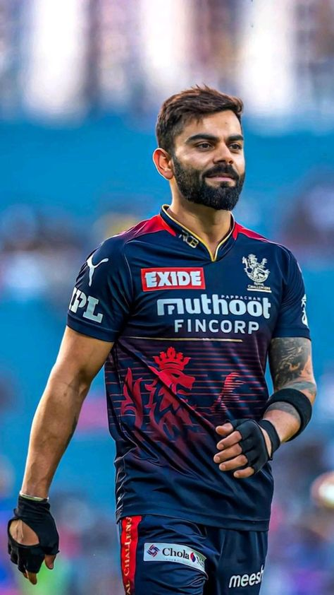
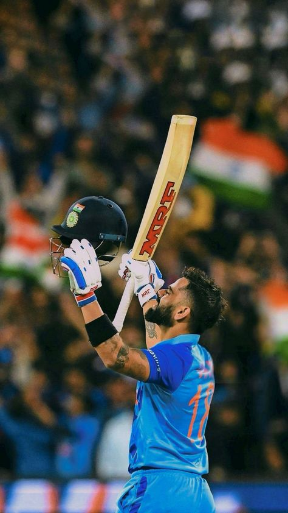

In the world of cricket, few names resonate as strongly as Virat
Kohli. Born on, in
Delhi, India, Kohli's journey from a young boy with a passion for
cricket to one of the most celebrated athletes in the sport is nothing
short of inspiring
Kohli's love for cricket blossomed at an early age. He joined the West
Delhi Cricket Academy and quickly showcased his talent, earning a spot
on the Indian U-19 team. His breakthrough came in
when he made his ODI debut against Sri Lanka,
scoring an impressive 12 runs. It wasn't long before he became a
regular in the national team, thanks to his aggressive batting and
unwavering determination.

Records and Achievements
Kohli's batting prowess is reflected in his record-breaking
achievements. He holds numerous records, including being one of the
fastest players to score 8,000, 9,000, and 10,000 runs in
ODIs.
His remarkable ability to chase down targets has earned him the
nickname "Chase Master." Kohli's aggressive style,
combined with his keen cricketing intelligence, has made him a
formidable opponent on the field.
Leadership
In 2017, Kohli took over as the captain of the Indian Test team,
leading with a blend of aggression and strategic thinking. Under his
captaincy, India achieved significant milestones, including a historic
Test series win in Australia in 2020-21. His leadership style
emphasizes fitness, discipline, and a relentless pursuit of
excellence.

Conclusion
Virat Kohli's journey from a passionate young cricketer to a
modern-day icon is a testament to his hard work, talent, and
determination. As he continues to break records and inspire the next
generation of cricketers, Kohli remains a true ambassador of the
sport, embodying the spirit of cricket both on and off the field.